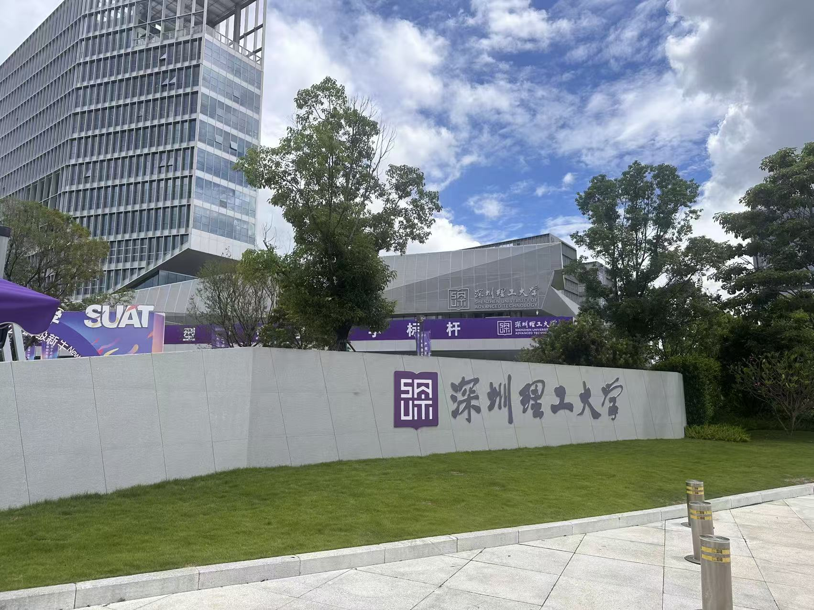
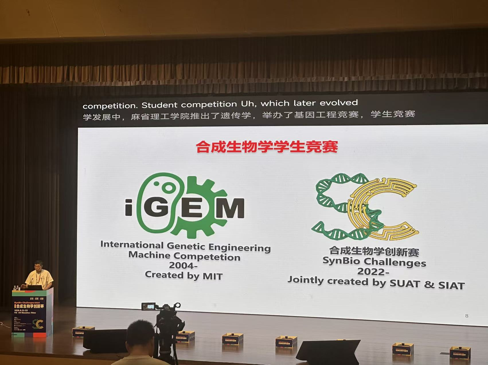
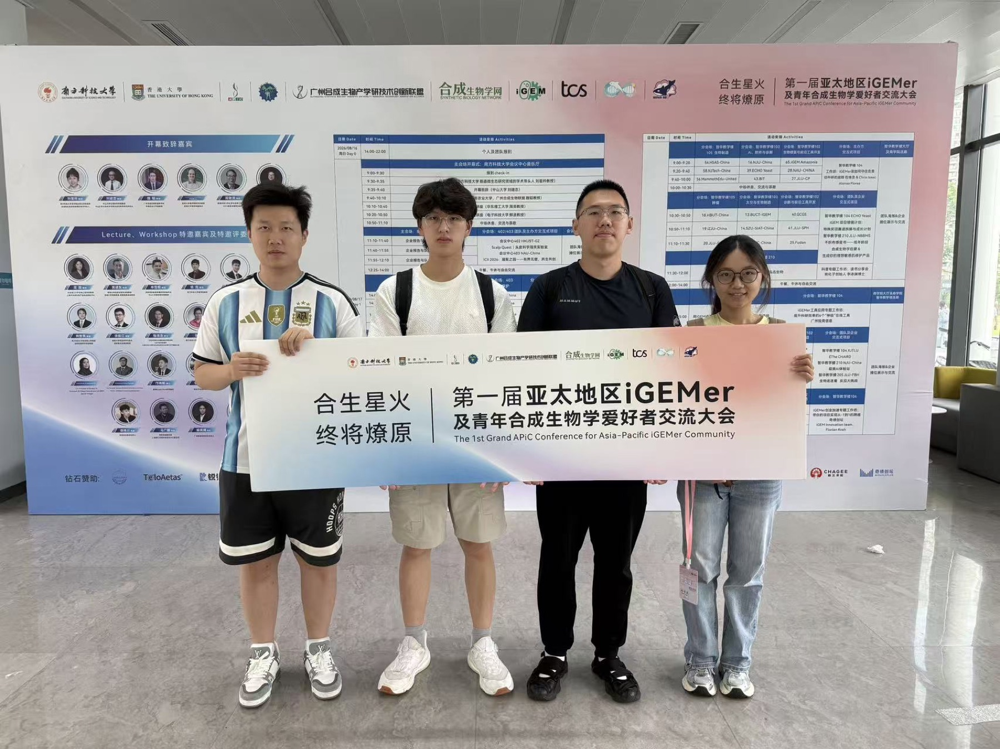
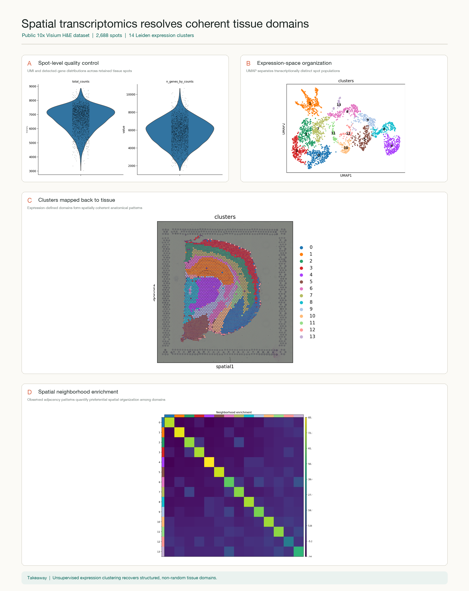

SynBio Challenges at SUAT
Very happy to participate in the SynBio Challenges held at Shenzhen University of Advanced Technology—an innovative university with a beautiful campus.


Notes from research and academic life
A running record of new collaborations, technical training, programs, and milestones.
Very happy to participate in the SynBio Challenges held at Shenzhen University of Advanced Technology—an innovative university with a beautiful campus.


Very happy to be at APiC and exchange ideas with the community.

Completed an end-to-end analysis of a public 10x Visium spatial transcriptomics dataset, moving from spot-level quality control and normalization to UMAP, Leiden clustering, tissue-domain mapping, and spatial neighborhood enrichment. Many thanks to my friend Song Zhaoqi for the helpful guidance, with Codex supporting the analysis workflow and figure preparation.

Completed hands-on micromanipulation training under Professor Han Zhengbin. I practiced instrument calibration, stable cell targeting, and controlled micro-tool movement, building a technical foundation for future single-cell experiments.


Joined the HIT–NWAFU iGEM collaboration as an advisor. My focus is to support experimental planning, technical troubleshooting, and cross-team coordination as the team prepares for the Grand Jamboree in Paris.


Completed programs at Westlake University and Peking University focused on quantitative approaches to biological questions, interdisciplinary collaboration, and translating computational results into testable hypotheses.
Received the National Scholarship, the highest honor for undergraduate students in China, recognizing academic performance, research engagement, and overall achievement.